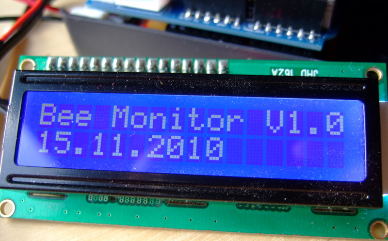
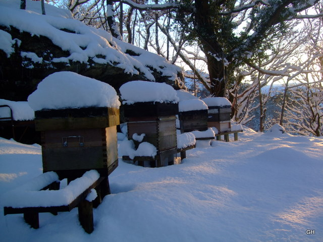

Bee Hive Monitor
An open-source bee-hive monitoring system
By Glyn and Clive Hudson
Update Dec 2014: We have a new home! See http://beemonitor.org for latest
Click here for info the new web-connected Bee Monitor V2 and to view live data


Bee hives in North Wales, UK (December 2010)

Prototype system in operation
Introduction
The aim of the experiment is to monitor the temperature inside the cluster of a honey bee colony and to compare this with other temperatures outside the cluster,inside the hive and outside the hive.
If successful, the second phase of the experiment will monitor these temperatures during a bee-keeping year.
A third phase will attempt to monitor the temperatures when the hive is opened for inspection by the bee-keeper.
Details

Above: Location of a temperature sensor in the core
Data is obtained from 7 sensors (4 temperature and 3 humidity) located outside, above the crown board and below the crown board, readings are taken and saved to an SD memory card every 60 seconds.
A 3V watch battery and a real-time clock chip (DS1302) is used to time-stamp the readings with the current date and time.
A 12V car battery is used to power the logger. This gives enough power for weeks few months of logging. It is possible, but not yet implemented to put the Arduino microprocessor into 'sleep' mode in between readings. This would significantly reduce the power consumption and therefore increase the battery life. See here for more details.
Hardware
(click on links for more information)
- Arduino 328
- Nuelectronics Real-time Datalog & IO Shield + SD card
- 4 x DS18B20 temperature sensors
- 3 x DHT11 Temperature and Humidity Module (only used for humidity)
DHT11 Humidity Sensor DS18B20 digital on-wire temperature sensor

Software:
Processing:
To remove sensor jitter I used MATLAB to make a moving average with a window size of 100 (i.e. average over 100 readings, which taken ever 30sec equates to 5min) to filter the data. A runing average filter such as this could be implemented in run-time on the Arduino. In the prototype system the data was post-processed. Click here for MATALB code.

Above: The effect of filtering
Data and observations:
December 2010
- Reasonably strong colony in a modified Commercial hive with 16"x10" brood frames
- Colony was a swarm, collected 28th June 2010 and fed with 4Kg of sugar syrup in September
- Cold settled spell with high pressure dominating the weather
- Snow with severe overnight frost was present for this period until 10th December when weather became milder

- The surprise of this data was the low temperature in the cluster, never above 11 deg C and as low as 7 deg.
- The cluster temperature rose by 1-2deg C during the day, sometimes rapidly as the sun raised the ambient and hive temperature.

- The main observation is that it says very humid in the hive
- The humidity sensors become saturated above 95% humidity this results in a horizontal line
- This hive humidity is condensation inside the hive being reduced slightly when the sun was out
March 2011
- Same hive as monitored before in December which did survive the cold temperatures
- There is now sealed brood in the cluster; see photo

- Big increase in cluster temperature from December, amazingly steady at about 34deg C
- All three other temperatures follow each other very closely
- Even T1, only mm outside the cluster is hardly influenced by the high cluster temperature
- The bee cluster is amazingly well insulated, keeping nearly all its heat internal

{kind=link}
- Humidity graph is complicated! What do you think?
- Hive humidity i.e condensation is far less than in December
Conclusions:
Other than the facts of the temperature and humidity data that can be read from the graphs, we feel it is too soon from conclusions.
Information
- at 10 degrees C, brood rearing stops and workers cannot fly
- at 5.6 degrees C, bees cannot move because their muscles are not warm enough
- at 4.4 degrees C, bees die
information from: http://www.beehacker.com/wp/?p=567#more-567
Future developmens
Here are a few things I would like to implement soon:
- Low power opperation - power the monitor from a small battery, possibly topped up with a solar cell
- Small hot-plugable LCD display for real-time feedback and error checking
- Wireless transmission + real-time online graphing. Building on this (possibly GRPS for hives far away)
- Real-time monitoring of the weight of a hive
Other work in the field for bee monitoring
Another Arduino based monitoring system (in development): http://www.beehacker.com/wp/?page_id=84
Low cost hive Scales: http://www.beehacker.com/wp/?page_id=55
On the topic of weight, here is a good looking tutorial for interfacing the Arduino wirth a load cell. Possibly taken from bathroom scales: http://cerulean.dk/words/?page_id=42
Complete GPRS based commercial bee monitoring systems: http://www.bee-smart.net/ and http://www.beewise.eu/
Excellant live bee hive data graphs from Colorado USA: http://beehivesleuth.com/graphs/graphs.php
Re: Bee Hive Monitor
Hi there Glyn/ Clive,
Wonderful project. As a beekeeper I have been thrashing something like this for a while, I have some very strong colonies and the tend to beard at the entrance. A system like yours is perfect for monitoring the hive temp and humidity. I was considering a project that monitors temp Humidity and gas monitoring and vibration. Have you tried this?
I was also wondering what power packs you were using in the out apairy. Also have the bees propolised the core temp sensor yet?
Have you any data for the last couple of months as Lincolnshire has been extremely warm - lots of local swarming fingers crossed I have had non. Any help is appreciated.
Regards Martin AKA Monkeybum
Re: Bee Hive Monitor
Hi
Excellent piece of work. What floors do you have in your hives ? Having had a similar winter as you (Abergavenny) I was wondering if there is a difference with Varora floors.
Also I've been playing around with Onewire for a while (monitoring 30 odd internal & external points, did you calibrate the sensors ? My experience is they can vary quite a bit.
Cheers
Keith
Re: Bee Hive Monitor
Hi Keith,
Thanks for your kind words.
The hive used is a Modified Commercial with 16”x 10” frames, a solid floor and a wooden mouse guard leaving a 4”X 5/16” entrance. The roofs are well ventilated with 4 off round vents 5/8” diameter. There is some ventilation in the top of the crown board, but these are at a minimum to prevent the bees having access to the electronics.
Are you using a varroa floor? Have you got any data you could share with us?
The temperature sensors I used (DS18B20) are digital sensors, they 'should' be factory calibrated and have an accuracy of +-0.5 deg C. I have compared the temperature readings from each sensor to each other and they are usually within 0.5deg C of each other. As I don't have a super accurate temperature gauge to hand, I have not been able to test how good the factory calibration is.
All the best, Glyn.
Re: Bee Hive Monitor
Nice piece of work, Glyn and Clive.
The charts and especially the blips on the March chart might interest the Wales BKA Newsletter editor.
David
Re: Bee Hive Monitor
Awesome Glyn! bee hive temperature is a fantastic looking graph, very interesting.